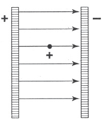

New York kentinin ve çevresinin bir haritası önümüzde serili duruyor. Şöyle soruyoruz: Bu haritadaki hangi noktalara trenle ulaşılabilir? Bu noktaları bir demiryolu tarifesinde bulduktan sonra haritada işaretliyoruz. Şimdi sorumuzu değiştirip şöyle soruyoruz: Hangi noktalara araba ile ulaşılabilir? Haritada New York’tan başlayan bütün karayollarını gösteren çizgiler çizersek, bu yollar üzerindeki bütün noktalara araba ile gerçekten ulaşılabilir. Her iki durumda da birer nokta takımı vardır. Birincide noktalar birbirinden ayrıdır ve her nokta farklı bir demiryolu durağını göstermektedir. İkincide ise, noktalar karayollarını gösteren çizgiler boyunca sıralanmıştır. Şimdi de bu noktaların her birinin New York’tan, ya da, daha tam söylemek gerekirse, bu kentin belirli bir noktasından uzaklığını soruyoruz. Birinci örnekte, haritamızdaki noktalara karşılık olan belirli sayılar vardır. Bu sayılar, düzensiz, ama hep sonlu, bazen küçük ve bazen büyük atlamalarla değişir. Şöyle diyebiliriz: Trenle ulaşılabilen yerlerin New York’tan uzaklıkları yalnız süreksiz bir biçimde değişir. Oysa araba ile ulaşılabilen yerlerin uzaklıkları, dilediğimiz kadar küçük aralıklarla değişebilir. Bu uzaklıklar sürekli bir biçimde değişebilir. Arabalı örnekte, uzaklık değişmeleri istendiği kadar küçültülebilir, oysa trenli örnekte böyle yapılamaz.
Bir taşkömürü ocağının üretimi sürekli bir biçimde değiştirilebilir. Üretilen kömürün tutarı istendiği kadar küçük niceliklerle artırılabilir ya da azaltılabilir. Oysa ocakta çalıştırılan işçilerin sayısı ancak süreksiz olarak değişebilir. “İşçi sayısı dünden beri, 3,783 arttı” demek, baştan sona saçma olurdu.
Kendisine cebinde kaç para olduğu sorulan bir adam, yalnız iki ondalıklı bir sayı söyleyebilir. Para tutarı yalnız sıçramalarla, süreksiz bir biçimde değişebilir. Amerika’da Amerikan parası için tanınan en küçük bozuk para, ya da bizim diyeceğimiz gibi, “temel kuantum”, bir senttir. İngiliz parası için temel kuantum çeyrek penidir ve ancak yarım Amerikan temel kuantumu eder. Burada, değerleri birbiri ile karşılaştırılabilen iki temel kuantum örneği görüyoruz. Onların değerleri arasındaki oranın belirli bir anlamı vardır; çünkü biri öbüründen iki kat daha değerlidir.
Şöyle diyebiliriz: Bazı nicelikler, daha çok küçültülemeyen basamaklarla sürekli olarak, bazıları ise yalnız süreksiz olarak değişebilir. Bu bölünemeyen basamaklara söz konusu niceliğin öğesel (elementary) kuantumu denir.
Pek çok kum tartabilir ve kum tanelerden oluşursa da, kütlesini sürekli sayabiliriz. Ama kum çok değerli ve kullanılan tartılar şaşmaz olsaydı, kütlenin hep bir kum tanesininkinin herhangi bir katı kadar değiştiği olgusunu göz önünde bulundurmak zorunda kalırdık. Bu bir tek kum tanesinin kütlesi, bizim temel kuantumumuz olurdu. Bu örnek, bir niceliğin sürekli sayılagelmiş olan süreksiz karakterinin, ölçümlerimizin kesinliğini artırmakla nasıl ortaya çıkarılabileceğini göstermektedir.
Kuantum teorisinin ana düşüncesini bir tümce ile anlatmamız gerekseydi, şöyle diyebilirdik: Sürekli sayılagelmiş bazı fiziksel niceliklerin öğesel kuantumlardan bileştiği varsayılmalıdır.
Kuantum teorisinin kucakladığı olgular pek çoktur. Bu olgular, modern deneyin çok gelişmiş tekniği ile ortaya çıkarılmaktadır. Burada başlıca deneyleri gösteremeyeceğimiz ve kısaca da olsa anlatamayacağımız için, onların sonuçlarını söz götürmez olarak anmamız gerekecektir. Ereğimiz yalnız temeldeki başlıca düşünceleri açıklamaktır.
MADDENİN VE ELEKTRİĞİN TEMEL KUANTUMLARI
Maddenin kinetik (hareket) teorisinin çizdiği madde tablosunda, bütün elementler moleküllerden yapılmıştır. En hafif elementin, hidrojenin, en basit durumunu ele alalım. Brown hareketleri incelenerek bir hidrojen molekülünün kütlesinin nasıl belirlendiğini görmüştük (bkz: s. 62). Hidrojen molekülünün ağırlığı,
0,000.000.000.000.000.000.000.0033 gramdır. Bu, kütlenin süreksiz olduğu anlamına gelir. Belirli ölçüde hidrojenin kütlesi yalnız her biri hidrojen molekülünün kütlesine karşılık olan en küçük basamakların tam sayısı kadar değişebilir. Ama kimyasal süreçler hidrojen molekülünün ikiye ayrılabileceğini ya da başka bir söyleyişle, hidrojen molekülünün iki atomdan bileştiğini göstermektedir. Kimyasal süreçlerde temel kuantum rolünü oynayan, molekül değildir, atomdur. Yukarıdaki sayıyı ikiye bölerek bir hidrojen atomunun kütlesini buluruz. Bu, yaklaşık olarak,
0,000.000.000.000.000.000.000.0017 gramdır.
Kütle, süreksiz bir niceliktir. Ama ağırlığı belirlerken bunun için kaygılanmamızın elbette gereği yoktur. Kütle değişimindeki süreksizliği ortaya çıkarmaya yarayabilecek kesinlik, en şaşmaz tartılarda bile yoktur.
Herkesin bildiği bir olguyu ele alalım: Bir akım kaynağına bir tel bağlanmıştır. Akım, telde, yüksek gerilimden (potential) alçak gerilime doğru olmaktadır. Birçok deneysel olgunun, telde akan elektrik akışkanları teorisi ile, o basit teori ile, açıklandığını biliyoruz. Daha yüksek gerilimden daha alçak gerilime akanın artı akışkan mı, yoksa eksi akışkan mı olduğuna karar vermenin yalnız bir biçim sorunu olduğunu da biliyoruz. Alan kavramlarının bu konuda sağladığı bütün gelişimi şimdilik bir yana bırakıp o basit elektrik akışkanları görüşüne bağlı kalarak düşünürken bile, çözülmesi gereken bazı sorunlar vardır. “Akışkan” adının da düşündürdüğü gibi, elektrik eskiden sürekli bir nicelik sayılıyordu. Eski görüşe göre, yükün niceliği istendiği kadar küçük basamaklarla değiştirilebilirdi. Temel elektrik kuantumları olduğunu varsaymanın gereği yoktu. Maddenin kinetik (hareket) teorisinin başarıları, bize şu yeni soruyu düşündürdü: Elektrik akışkanlarının temel kuantumları var mıdır? Çözülmesi gereken başka bir sorun ise şuydu: Akım, artı akışkanın mı, eksi akışkanın mı, yoksa ikisinin birlikte mi akışıdır?
Bu soruları yanıtlayan bütün deneylerdeki düşünce, elektrik akışkanını telden koparıp ona boş uzayda yol aldırmak, onun madde ile birleşmesini önlemek ve bu koşullarda onun apaçık ortaya çıkması gereken özelliklerini incelemektir. 19. yüzyılın sonlarında bu çeşit birçok deney yapıldı. Bu deneylerin hazırlanışındaki temel düşünceyi hiç değilse bir tek örnekle açıklamadan önce, sonuçları bildireceğiz. Telde akan elektrik akışkanı eksi akışkandır ve bundan dolayı, daha alçak gerilimden daha yüksek gerilime doğrudur. Bunu başlangıçta, elektrik akışkanları teorisi ilk kez biçimlenirken bilseydik, besbelli sözcüklerin yerlerini değiştirir, lastik çubuktaki elektriğe artı, cam çubuktakine eksi derdik. O zaman, akan akışkanı artı akışkan saymak daha elverişli olurdu. Ama başlangıçta yanlış ata oynadığımız için, şimdi bu elverişsizliğe katlanmamız gerekiyor. Bundan sonraki önemli soru, bu eksi akışkanın yapısının “taneli” olup olmadığı, elektrik kuantumlarından bileşip bileşmediğidir. Birbirinden bağımsız birtakım deneyler, bu eksi akışkanın temel kuantumu olduğunun hiç söz götürmediğini göstermektedir. Eksi elektrik akışkanı, kum tanelerinden bileşen bir kumsal ya da tuğlalardan örülü bir duvar gibi, tanelerden yapılmıştır. J. J. Thomson, aşağı yukarı kırk yıl önce, bu sonucu apaçık formülleştirmiştir. Eksi elektriğin temel kuantumlarına elektronlar denir. Böylece, her eksi elektrik yükü, çok sayıda ve elektron biçimindeki öğesel yüklerden oluşmuştur. Eksi yük, kütle gibi, yalnız süreksiz olarak değişebilir. Bununla birlikte, temel elektrik yükü öylesine küçüktür ki, birçok araştırmalarda, onu sürekli saymak aynı ölçüde olanaklıdır ve bazen daha da elverişlidir. Böylece, atom ve elektron teorileri, yalnız sıçramalarla değişebilen fiziksel nicelikleri bilime sokmuştur.
Bütün havası boşaltılmış bir yerde, paralel iki metal levha düşününüz. Levhalardan biri artı, öbürü eksi yüklü olsun. İki levha arasına sınama amacı ile konan bir artı yük, artı yüklü levhadan itilecek ve eksi yüklü levhaya çekilecektir. Demek ki elektrik alanının kuvvet çizgileri artı yüklü levhadan eksi yüklüye doğrudur. [Şekil-70] Eksi yüklü bir sınama cismini etkileyen kuvvetin yönü ise bunun karşıtı olurdu. Levhalar yeterince büyükse, aralarındaki kuvvet çizgileri her yerde aynı sıklıkta olacaktır, sınama cisminin konduğu yer önemsizdir, kuvvet ve bundan ötürü kuvvet çizgilerinin sıklığı aynı olacaktır. Levhalar arasında bir yere bırakılan elektronlar, tıpkı yerin gravitational alanındaki yağmur damlaları gibi davranarak, eksi yüklü levhadan artı yüklüye doğru birbirine paralel olarak hareket edecektir. Bir elektron demetini böyle bir alana düşüren ve onların hepsini aynı doğrultuya yönelten başarılı birçok deney bilinmektedir. Bunların en basitlerinden biri, ısıtılmış bir teli yüklü levhaların arasına koymaktır. Isıtılmış tel elektronlar salar ve telin dışındaki alanın kuvvet çizgileri bu elektronlara yön verir. Örneğin, herkesin bildiği radyo tüpleri bu ilkeye dayanır.

[Şekil-70]
Elektron demetleri ile yapılmış pek ustalıklı birçok deney vardır. Farklı dış elektrik alanlarında ve magnetik alanlarda elektronların izlediği yolda ortaya çıkan değişiklikler incelenmiştir. Bir tek elektronu ayırıp onun temel yükünü ve kütlesini, yani, onun bir dış kuvvetin etkisine gösterdiği süredurumsal direncini belirlemek bile başarılmıştır. Burada yalnız bir elektronun kütlesinin değerini bildireceğiz. Elektronun kütlesi, hidrojen atomunun kütlesinden aşağı yukarı iki bin kat daha küçüktür. Onun için, hidrojen atomunun kütlesi, küçük olmakla birlikte, elektronun kütlesi ile karşılaştırılınca pek büyük görünmektedir. Tutarlı bir alan teorisi bakımından, elektronun kütlesi, yani bütün enerjisi, onun alanının enerjisidir; bu alandaki kuvvetin çoğu, çok küçük bir kürede toplanmıştır; ve kuvvet, elektronun “merkezinden” uzakta zayıftır.
Daha önce, herhangi bir elementin atomunun o elementin en küçük temel kuantumu olduğunu söylemiştik. Buna çok önceleri inanılmıştır. Ama artık böyle olmadığı bilinmektedir! Bilim, eski görüşün sınırlarını gösteren yeni bir görüş geliştirmiştir. Fizikte, olgulara dayanan hiçbir şey, atomun karmaşık yapısı üzerine söylenenlerden daha sağlam biçimde söylenmemiş gibidir. Önce eksi elektrik akışkanının temel kuantumu olan elektronun, atomun da bileşenlerinden biri olduğu, tüm maddenin yapı taşlarından biri olduğu anlaşılmıştır. Daha önce andığımız o elektron salan ısıtılmış tel örneği, bu taneciklerin maddeden çıkartıldığını gösteren sayısız örnekten yalnız biridir. Maddenin yapısı problemi ile elektriğin yapısı problemini birleştiren bu sonucun birbirinden bağımsız birçok deneysel olgudan çıktığı hiç söz götürmez.
Bir atomdan, onu bileştiren elektronların birkaçını çıkarmak, bir dereceye kadar kolaydır. Bu, ısıtılmış tel örneğimizde olduğu gibi, yalnız ısı ile, ya da başka bir yoldan, örneğin atomları başka elektronlarla bombalayarak yapılabilir.
Seyreltilmiş hidrojene daldırılmış ince, kızılkor durumunda metal bir tel düşününüz. Tel, her yöne elektronlar salacaktır. Bir dış elektrik alanının etkisi, onlara belirli bir hız verecektir. Bir elektron, tıpkı bir gravitational alana düşen bir taş gibi, hızını artırır. Bu yöntemle, belirli bir yönde ve belirli bir çabuklukla yol alan bir elektron demeti elde edebiliriz. Bugünlerde, elektronları çok kuvvetli alanların etkisinde bırakarak, ışığınki ile karşılaştırılabilecek hızlara ulaşabiliyoruz. Peki, belirli hızdaki bir elektron demeti, seyreltilmiş hidrojen moleküllerine çarpınca ne olur? Yeterince hızlı bir elektronun çarpması, hidrojen molekülünü yalnız iki atomuna ayırmakla kalmaz, o iki atomun birinden bir de elektron çıkarır.
Elektronların maddenin yapı taşları olduğu gerçeğini kabul edelim. Öyleyse, kendisinden bir elektron koparılan atom, elektrikçe nötr olamaz. Önce nötr olsa da, artık öyle olamaz; çünkü bir öğesel yüklük eksiği vardır. Geri kalan atom, artı yüklü olmalıdır. Bundan başka, elektronun kütlesi en hafif atomun kütlesinden bile çok hafif olduğu için, atomun kütlesinin en büyük kesimini elektronların değil, elektronlardan çok daha ağır olan ve artakalan temel taneciklerin oluşturduğu sonucuna güvenle varabiliriz. Atomun bu ağır kesimine onun çekirdeği diyoruz.
Çağdaş deneysel fizik, atomun çekirdeğini parçalamak, bir elementin atomlarını öbür elementlerin atomlarına dönüştürmek, çekirdeğin yapıldığı temel tanecikleri çekirdekten çıkarmak için yöntemler geliştirmiştir. Fiziğin “çekirdek fiziği” diye bilinen bu bölümüne Rutherford’un büyük emeği geçmiştir. Çekirdek fiziği, deneysel bakımdan, fiziğin en ilginç bölümüdür. Ama henüz, temel düşünceleri basit olan ve çekirdek fiziğinin pek çeşitli olgularını birbirine bağlayan bir teori yoktur. Bu sayfalarda yalnız genel fiziksel düşüncelerle ilgilendiğimiz için, çağdaş fizikte büyük önemi olan bu bölümü atlayacağız.